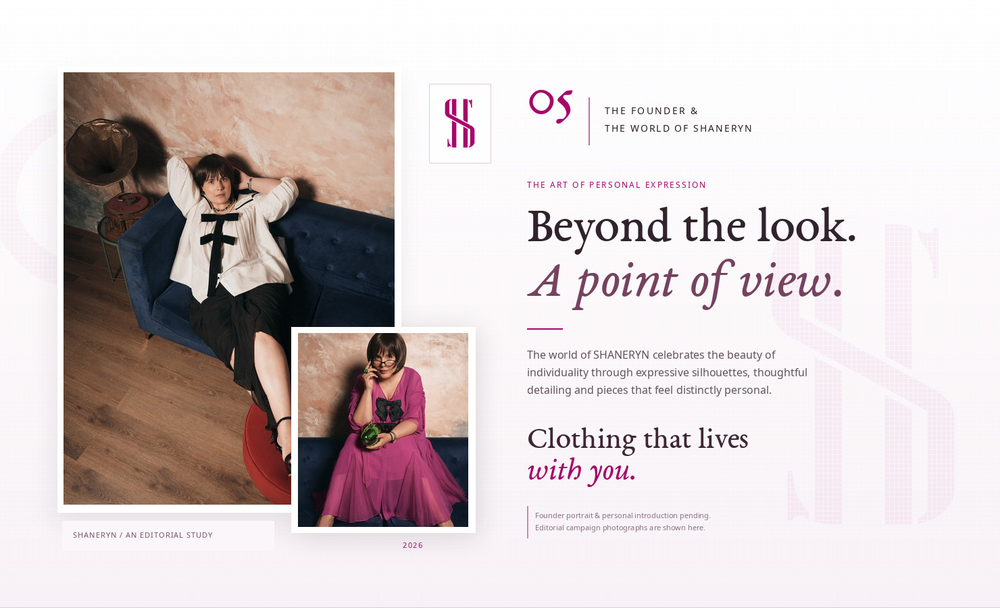
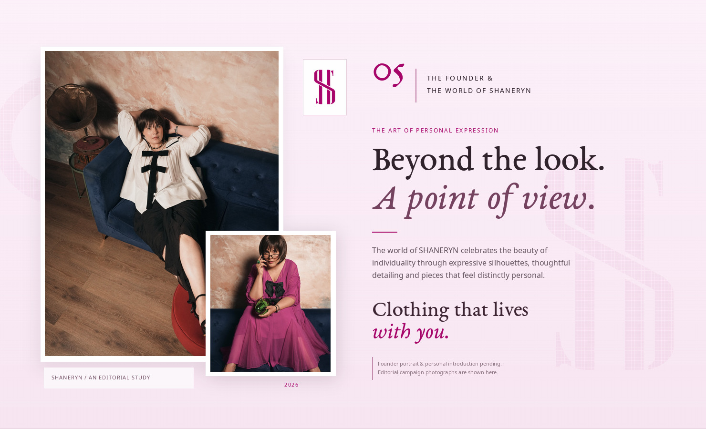

OPTION B / RECOMMENDED
White Gallery
White-first fashion editorial, soft blush accents, signature magenta, and the strongest emphasis on your original photography.

The approved six-chapter homepage and Collections page, refined with editorial framing, a subtle textile texture, and the original SHANERYN monogram. Compare both interactive versions below.

White-first fashion editorial, soft blush accents, signature magenta, and the strongest emphasis on your original photography.

Soft pink editorial atmosphere with a warmer tactile expression while retaining the same approved content and site structure.
Design-review prototype. The visuals above are Section 05 art-direction mockups, not browser screenshots. The linked homepage and Collections pages are interactive static prototypes. Verified founder content, official film, final catalogue and live enquiries remain pending.